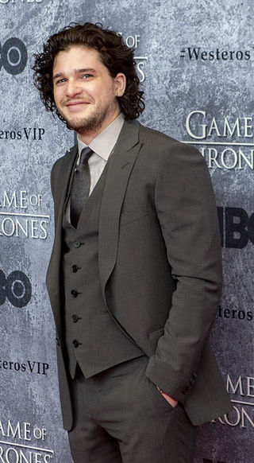
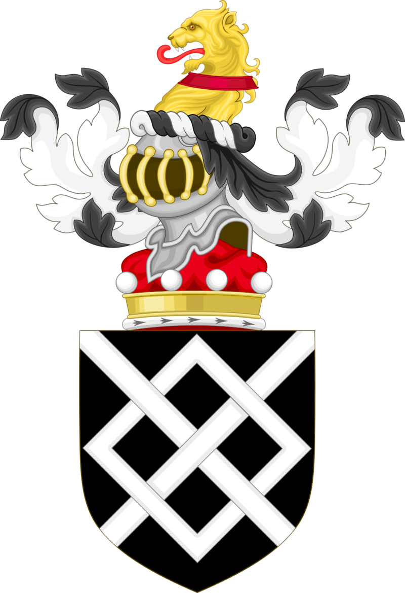

Jon Snow is the bastard son of Eddard Stark, Lord of Winterfell. He has five half-siblings: Robb, Sansa, Arya, Bran, and Rickon Stark. Unaware of the identity of his mother, Jon was raised at Winterfell. At the age of fourteen, he joins the Night's Watch, where he earns the nickname Lord Snow.
Christopher Catesby Harington (Acton, Gran Londres, 26 de diciembre de 1986), más conocido como Kit Harington es un actor británico, reconocido internacionalmente por su papel de Jon Snow en la saga Game Of Thrones
Aunque es conocido por su nombre artístico y apodo Kit Harington, él mismo no fue consciente de que su nombre real era
Christopher hasta que cumplió once años.
Tiene ascendencia noble, concretamente de los Barones de Harington, siendo descendiente de Sir Richard Harington XII,
Sir William Molesworth, Henry Dundas y Carlos II de Inglaterra, siendo este su ocho veces bisabuelo. Otro de sus
antepasados fue el escritor John Harington, inventor del inodoro.
Cursó sus primeros estudios en la Escuela Southfield entre 1992 y 1998. Después asistió a la Chantry High School, en
Martley entre 1998 y 2003.
Estudió en Worcester Sixth Form College, donde cursó estudios drama y teatro, entre 2003 y 2005.
Se graduó en 2008 en la Central School of Speech and Drama, dependiente de la Universidad de Londres.
Harington se dio a conocer a nivel mundial en 2011 gracias a su papel de Jon Snow en la serie de la HBO Juego de
tronos, siendo éste su primer papel televisivo. En el rodaje de la segunda temporada de la serie surgieron rumores
de que su relación con Rose Leslie (Ygritte en la serie) había traspasado la pantalla. Son pareja actualmente.5 En
2011 grabó junto a Sean Bean, Adelaide Clemens y Carrie-Anne Moss la secuela de Silent Hill, llamada Silent Hill:
Revelation 3D, en la que interpretó a Vincent Carter.6 Silent Hill Revelation tuvo como referencia la versión del
video juego Silent Hill 3, donde una joven por medio de una revelación se da cuenta de que no era quien pensaba,
generando un conflicto interior y terminando en el pueblo infernal de Silent Hill.7 Se estrenó el 26 de octubre de
2012 en Estados Unidos y Canadá.
En 2014 protagonizó la película Pompeya en la que interpretó a Milo, un esclavo que se convierte en gladiador que
debe salvar a su amada antes de que la ciudad de Pompeya se derrumbe.9 Ese mismo año, hizo la voz de un papel
secundario en Cómo entrenar a tu dragón 2. Posteriormente, actuó en Testament of Youth una historia basada en
memorias de la primera guerra mundial. Su papel fue el de Roland Leighton, el prometido de la protagonista y la
película trata de como ellos junto con algunos amigos son enviados a servir al frente de guerra.10 Su última
película de 2014 fue Seventh Son, basada en la novela The Spook's Apprentice donde interpretó el papel secundario
de Billy Bradley.
Su primer papel de 2015 fue en el telefilme de HBO 7 Days in Hell, un falso documental en el que interpreta a un
famoso tenista que se encuentra en la final del Grand Slam en Wimbledon. Al llegar con un empate al quinto set, ni
él ni su rival pueden sacar la ventaja necesaria para ganar, por lo cual el juego se extiende durante una
semana.12 Ese mismo año interpretó un papel protagónico en Spooks: The Greater Good la película de la serie de
televisión británica Spooks.
En noviembre de 2017, se confirmó el papel de Kit Harington en la nueva serie Gunpowder, un drama de suspense de
HBO basado en hechos reales.
Antes de que la fama le llegara gracias a HBO, Kit Harington ya era un actor con experiencia en el mundo del teatro.
Entre 2008 y 2009 protagonizó la obra teatral War Horse, sobre la que Steven Spielberg desarrollaría una película.
La puesta en escena fue en el Royal National Theatre de Londres, transfiriéndose posteriormente al New London
Theatre, en el distrito teatral londinense conocido como el West End
En 2010, apareció en la obra Posh, de Laura Wade, en la Royal Court Theatre de Londres.
En 2012 empezó a salir con su compañera de reparto en Game of Thrones, Rose Leslie, pero la relación se terminó un año después. Aun así en 2016, Harington confirmó su relación amorosa. El 23 de junio de 2018 la pareja se casó en el castillo familiar de Wardhill, propiedad de la familia de la novia.
|  |  |